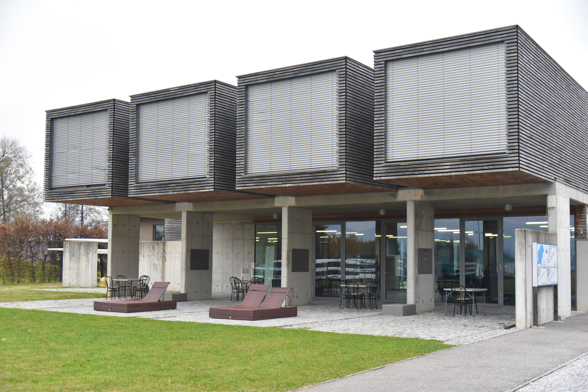

Scopri le nostre attività e diventa parte della nostra squadra
Chi siamo
Siamo un centro remiero con esperienza decennale nel settore. Offriamo corsi di avviamento e perfezionamento per principianti e atleti professionisti. La nostra sede si trova in Via Provinciale, 26, 22030 Eupilio CO, con facile accesso al lago di pusiano.
Storia
Negli anni ’60 le società che si affacciano sul ramo di ponente iniziano ad affrontare i primi problemi dovuti alla navigazione, sempre più frequente, ed al vento che rende sempre più agitate le acque bellissime del lago di Como.
Si cercano alternative nei laghetti minori che, creati dallo stesso ghiacciaio che ha generato il Lago di Como, posti a semicerchio avvicinano il ramo di Lecco a quello di Como.
Fra questi, il Lago di Pusiano rappresenta la migliore soluzione sia dal punto di vista meteorologico, grazie ad una assenza quasi totale di vento, sia dal punto di vista della tranquillità del lago essendo vietata la navigazione.
Alla tranquillità delle acque si aggiungono una lunghezza, una larghezza e superficie complessiva adattissime all’attività di formazione, di tecnica e di allenamento per l’attività di canottaggio.
Si affacciano quindi le prime società che successivamente negli anni ’80 invitano la Federazione Nazionale di Canottaggio a considerare l’opportunità di finanziare una sede periferica fondamentale per l’attività agonistica delle società del Lago di Como. Sono gli ultimi anni di un grandissimo ed amatissimo Presidente Federale molto sensibile allo sviluppo del attività remiera che non si fa sfuggire l’occasione per dare importanza alla pratica del remo. Fu proprio Paolo D’Aloja a portare di persona i fondi per la realizzazione del primo hangar barche all’allora sindaco di Eupilio, Vittorio Molteni
Inizia così la storia del Centro Remiero che successivamente, negli anni ‘90, viene ampliato affiancando una piccola palestra con sala voga ed un centro di medicina dello sport.
Le società del Lago di Como trasferiscono sul lago di Pusiano, la sede operativa per la preparazione agonistica delle rispettive squadre. Creano un comitato e iniziano a collaborare per la gestione del Centro. Primo ed unico progetto di aggregazione in Italia.
Si arriva così al 2010, quando, in una bellissima serata al ristorante della Canottieri Lario, l’assessore allo sport della provincia di Como, Achille Moioli, espone alle società del lago uno studio di fattibilità per ampliare e completare il centro che era nel frattempo diventato insufficiente ad ospitare tutti gli atleti del Lago.
Dall’incredulità delle società si è passati alla sorpresa nel vedere ben presto la proposta realizzata in un progetto di massima; la realizzazione è stata affidata al Consorzio del Lario ora Autorità di Bacino del Lario e dei Laghi Minori; dal progetto si è passati alla richiesta di finanziamento che vede coinvolti oltre alle province di Como e Lecco, ben 7 comuni ed altrettanti enti ed associazioni ambientati e di tutela del territorio. Tutti ci credono, tutti si impegnano. Si arriva all’assegnazione dei lavori ed alla posa della prima pietra; nel novembre del 2012 iniziano i lavori per la realizzazione di quello che possiamo definire oggi uno dei centri di canottaggio più belli d’Italia.

Le nostre attività
Corsi di avviamento
Impara le basi del remo con i nostri istruttori qualificati
Squadra di competizione
Unisciti alla nostra squadra e competi a livello nazionale
Remo turistico
Scopri il fiume e i suoi paesaggi con le nostre escursioni in canoa
Contattaci
Questo sito utilizza i cookie per garantirti una migliore esperienza di navigazione. Maggiori informazioni